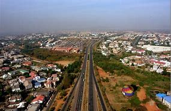
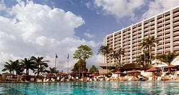
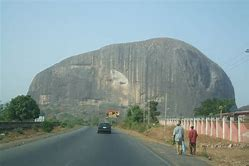
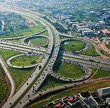

Abuja is the capital city of Nigeria located in the centre of the country within the Federal Capital Territory. It is a planned city and was built mainly in the 1980s, replacing the country's most populous city of Lagos as the capital on 12 December 1991. Abuja's geography is defined by Aso Rock, a 400-metre monolith left by water erosion. The Presidential Complex, National Assembly, Supreme Court and much of the city extend to the south of the rock. Zuma Rock, a 792-metre monolith, lies just north of the city on the expressway to Kaduna. At the 2006 census, the city of Abuja had a population of 776,298 making it one of the ten most populous cities in Nigeria. According to the United Nations, Abuja grew by 139.7% between 2000 and 2010, making it the fastest growing city in the world.As of 2015, the city is experiencing an annual growth of at least 35%, retaining its position as the fastest-growing city on the African continent and one of the fastest-growing in the world.As at 2016, the metropolitan area of Abuja is estimated at six million persons, placing it behind only Lagos, as the most populous metro area in Nigeria. Major religious sites include the Nigerian National Mosque and the Nigerian National Christian Centre. The city is served by the Nnamdi Azikiwe International Airport. Abuja is known for being one of the few purpose-built capital cities in Africa, as well as being one of the wealthiest. Abuja is Nigeria's administrative and political centre. It is also a key capital on the African continent due to Nigeria's geo-political influence in regional affairs. Abuja is also a conference centre and hosts various meetings annually, such as the 2003 Commonwealth Heads of Government meeting and the 2014 World Economic Forum (Africa) meetings.
   